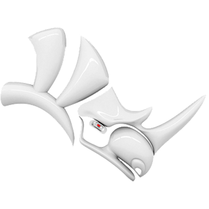
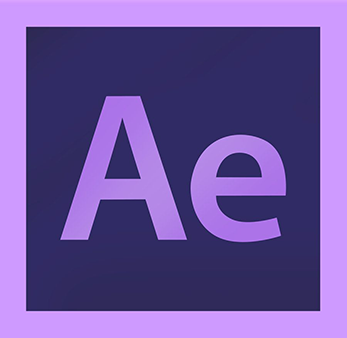

Brandon
Cuffy
a little bit about me
__I'm an architect, educator, and creative coder, and always in persuit of that which enhances the human expeience. My work focuses on inquiries into the human condition and how we interact with our environment. Whether through space, methodology, or bits and bytes, I explore the synergy between the intuitive idiosyncrasies of living, and the ability of design to compliment these peculiarities in an intelligent way. I combine my skills in design, fabrication, and computing to create seamless experiences that assert the role of design in the curation of experience.__

Skills + Tech
- 

- 